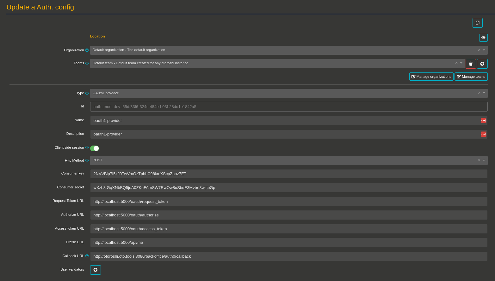
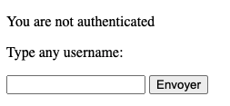
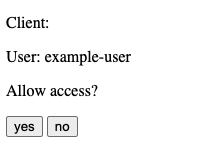

Secure an app with OAuth1 client flow
Before you start
If you already have an up and running otoroshi instance, you can skip the following instructions
Let’s start by downloading the latest Otoroshi.
curl -L -o otoroshi.jar 'https://github.com/MAIF/otoroshi/releases/download/v1.5.0/otoroshi.jar'
then you can run start Otoroshi :
java -Dapp.adminPassword=password -jar otoroshi.jar
Now you can log into Otoroshi at http://otoroshi.oto.tools:8080 with admin@otoroshi.io/password
Create a service, exposed on http://myservice.oto.tools:8080, which will forward all requests to the mirror https://mirror.otoroshi.io. Each call to this service will returned the body and the headers received by the mirror.
curl -X POST 'http://otoroshi-api.oto.tools:8080/api/services' \
-d '{"enforceSecureCommunication": false, "forceHttps": false, "_loc":{"tenant":"default","teams":["default"]},"groupId":"default","groups":["default"],"name":"my-service","description":"a service","env":"prod","domain":"oto.tools","subdomain":"myservice","targetsLoadBalancing":{"type":"RoundRobin"},"targets":[{"host":"mirror.otoroshi.io","scheme":"https","weight":1,"mtlsConfig":{"certs":[],"trustedCerts":[],"mtls":false,"loose":false,"trustAll":false},"tags":[],"metadata":{},"protocol":"HTTP\/1.1","predicate":{"type":"AlwaysMatch"},"ipAddress":null}],"root":"\/","matchingRoot":null,"stripPath":true,"enabled":true,"secComHeaders":{"claimRequestName":null,"stateRequestName":null,"stateResponseName":null},"publicPatterns":["\/.*"],"privatePatterns":[],"kind":"ServiceDescriptor"}' \
-H "Content-type: application/json" \
-u admin-api-apikey-id:admin-api-apikey-secret
Running an simple OAuth 1 server
In this tutorial, we’ll instanciate a oauth 1 server with docker. If you alredy have the necessary, skip this section to.
Let’s start by running the server
docker run -d --name oauth1-server --rm \
-p 5000:5000 \
-e OAUTH1_CLIENT_ID=2NVVBip7I5kfl0TwVmGzTphhC98kmXScpZaoz7ET \
-e OAUTH1_CLIENT_SECRET=wXzb8tGqXNbBQ5juA0ZKuFAmSW7RwOw8uSbdE3MvbrI8wjcbGp \
-e OAUTH1_REDIRECT_URI=http://otoroshi.oto.tools:8080/backoffice/auth0/callback \
ghcr.io/beryju/oauth1-test-server
We created a oauth 1 server which accepts http://otoroshi.oto.tools:8080/backoffice/auth0/callback as Redirect URI. This URL is used by Otoroshi to retrieve a token and a profile at the end of an authentication process.
After this command, the container logs should output :
127.0.0.1 - - [14/Oct/2021 12:10:49] "HEAD /api/health HTTP/1.1" 200 -
Create an OAuth 1 provider module
- Go ahead, and navigate to http://otoroshi.oto.tools:8080
- Click on the cog icon on the top right
- Then Authentication configs button
- And add a new configuration when clicking on the Add item button
- Select the
Oauth1 providerin the type selector field - Set a basic name and description like
oauth1-provider - Set
2NVVBip7I5kfl0TwVmGzTphhC98kmXScpZaoz7ETasConsumer key - Set
wXzb8tGqXNbBQ5juA0ZKuFAmSW7RwOw8uSbdE3MvbrI8wjcbGpasConsumer secret - Set
http://localhost:5000/oauth/request_tokenasRequest Token URL - Set
http://localhost:5000/oauth/authorizeasAuthorize URL - Set
http://localhost:oauth/access_tokenasAccess token URL - Set
http://localhost:5000/api/measProfile URL - Set
http://otoroshi.oto.tools:8080/backoffice/auth0/callbackasCallback URL - At the bottom of the page, disable the secure button (because we’re using http and this configuration avoid to include cookie in an HTTP Request without secure channel, typically HTTPs)
At this point, your configuration should be similar to :
With this configuration, the connected user will receive default access on teams and organizations. If you want to change the access rights for a specific user, you can achieve it with the Rights override field and a configuration like :
{
"foo@example.com": [
{
"tenant": "*:rw",
"teams": [
"*:rw"
]
}
]
}
Save your configuration at the bottom of the page, then navigate to the danger zone to use your module as a third-party connection to the Otoroshi UI.
Connect to Otoroshi with OAuth1 authentication
To secure Otoroshi with your OAuth1 configuration, we have to register an Authentication configuration as a BackOffice Auth. configuration.
- Navigate to the danger zone (when clicking on the cog on the top right and selecting Danger zone)
- Scroll to the BackOffice auth. settings
- Select your last Authentication configuration (created in the previous section)
- Save the global configuration with the button on the top right
Testing your configuration
- Disconnect from your instance
- Then click on the Login using third-party button (or navigate to http://otoroshi.oto.tools:8080)
- Click on Login using Third-party button
- If all is configured, Otoroshi will redirect you to the oauth 1 server login page
- Set
example-useras user and trust the user by clicking onyesbutton. - Good work! You’re connected to Otoroshi with an OAuth1 module.
A fallback solution is always available in the event of a bad authentication configuration. By going to http://otoroshi.oto.tools:8080/bo/simple/login, the administrators will be able to redefine the configuration.
Secure an app with OAuth 1 authentication
With the previous configuration, you can secure any of Otoroshi services with it.
The first step is to apply a little change on the previous configuration.
- Navigate to http://otoroshi.oto.tools:8080/bo/dashboard/auth-configs.
- Create a new auth module configuration with the same values.
- Replace the
Callback URLfield tohttp://privateapps.oto.tools:8080/privateapps/generic/callback(we changed this value because the redirection of a logged user by a third-party server is cover by an other route by Otoroshi). - Disable the
securebutton (because we’re using http and this configuration avoid to include cookie in an HTTP Request without secure channel, typically HTTPs)
Note : an Otoroshi service is called a private app when it is protected by an authentication module.
Our example server supports only one redirect URI. We need to kill it, and to create a new container with http://otoroshi.oto.tools:8080/privateapps/generic/callback as OAUTH1_REDIRECT_URI
docker rm -f oauth1-server
docker run -d --name oauth1-server --rm \
-p 5000:5000 \
-e OAUTH1_CLIENT_ID=2NVVBip7I5kfl0TwVmGzTphhC98kmXScpZaoz7ET \
-e OAUTH1_CLIENT_SECRET=wXzb8tGqXNbBQ5juA0ZKuFAmSW7RwOw8uSbdE3MvbrI8wjcbGp \
-e OAUTH1_REDIRECT_URI=http://privateapps.oto.tools:8080/privateapps/generic/callback \
ghcr.io/beryju/oauth1-test-server
Once the authentication module and the new container created, we can define the authentication module on the service.
- Navigate to any created service
- Scroll to
Authenticationsection - Enable
Enforce user authentication - Select your Authentication config inside the list
- Enable
Strict mode - Don’t forget to save your configuration.
Now you can try to call your defined service and see the login module appears.

The allow access to the user.

If you had any errors, make sure of :
- check if you are on http or https, and if the secure cookie option is enabled or not on the authentication module
- check if your OAuth1 server has the REDIRECT_URI set on privateapps/…
- Make sure your server supports POST or GET OAuth1 flow set on authentication module
Once the configuration is working, you can check, when connecting with an Otoroshi admin user, the Private App session created (use the cog at the top right of the page, and select Priv. app sesssions, or navigate to http://otoroshi.oto.tools:8080/bo/dashboard/sessions/private).
One interesing feature is to check the profile of the connected user. In our case, when clicking on the Profile button of the right user, we should have :
{
"email": "foo@example.com",
"id": 1,
"name": "test name",
"screen_name": "example-user"
}